输入零件原点参数
置开关在EDIT或AUTO
按键进入参数设定页面，按“坐标系”
用PAGE
| FANUC 0iT数控系统操作 |
在“视图”下拉菜单或者浮动菜单中选择“控制面板切换”后，数控系统操作键盘会出现在视窗的右上角，其左侧为数控系统显示屏，如下图所示。用操作键盘结合显示屏可以进行数控系统操作。
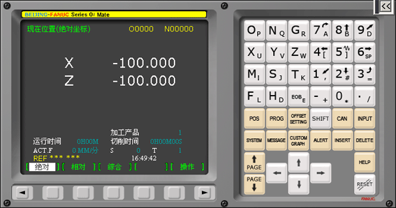
数字/字母键
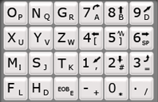
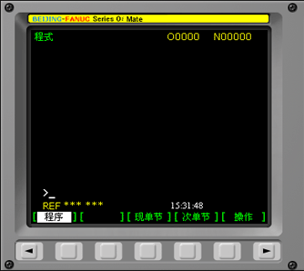
页面切换键
数控程序显示与编辑页面。
位置显示页面。位置显示有三种方式，用PAGE按钮选择。
参数输入页面。按第一次进入坐标系设置页面，按第二次进入刀具补偿参数页面。进入不同的页面以后，用PAGE 按钮切换。
系统帮助页面。
图形参数设置页面。
信息页面，如“报警”。
系统参数页面。
复位键。
翻页按钮（PAGE）
向上翻页。
向下翻页。
光标移动（CURSOR）
向上移动光标。
向下移动光标。
向左移动光标。
向右d移动光标。
输入键
输入键。把输入域内的数据输入参数页面或者输入一个外部的数控程序。
手动操作虚拟数控铣床
回参考点
*置模式旋钮在“”位置
*选择各轴,按住按钮,即回参考点.
移动
手动移动机床的方法有三种：
方法一: 连续移动（
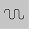
）。这种方法用于较长距离的台面移动。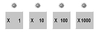
步进量。
开、关主轴
置模式旋钮在“JOG”位置。
按 按钮开
机床主轴 、按
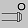
关机床主轴
启动程序加工零件
置模式旋钮在“AUTO”位置
选择一个数控程序
按数控程序运行控制开关中的按钮
试运行程序
试运行程序时，机床和刀具不切削零件，仅运行程序.
置在机床锁位置
选择一个数控程序如O001后按调出程序。
按数控程序运行控制开关中的按钮。
单步运行
置单步开关于“ON”位置
数控程序运行过程中，每按一次执行一条指令。
选择一个数控程序
有二种方法进行选择
方法一:按编号搜索
选择默模式放在EDIT
按键入字母“O”
按键入数子“7”
键入搜索的号码：“O7”
按
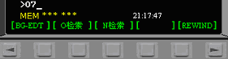
， “O7”显示在屏幕上 ，可输入程序段号“N30”，按搜索程序段
方法二: 选择模式AUTO位置
按键入字母“O”
按键入字母“7”，键入搜索的号码：“O7”
按开始搜索， “O7”显示在屏幕右上角，NC程序显示在屏幕上。
删除一个数控程序
选择模式在EDIT
按键入字母“O”
按键入字母“7”
键入要删除的程序的号码：“O7”
按, “O7”NC程序被删除。
删除全部数控程序
选择模式在EDIT
按
按键入字母“O”
键入“9999”
按全部数控程序被删除
搜索一个指定的代码
一个指定的代码可以是：一个字母或一个完整的代码。例如：“N0010”，“M”，“F”，“G03”等等。搜索在当前数控程序内进行。操作步骤如下：
在AUTO或EDIT
按
选择一个NC程序
输入需要搜索的字母或代码
按 CURSOR 开始在当前数控程序中搜索。
编辑NC程序（删除、插入、替换操作）
模式置于EDIT
选择
输入被编辑的NC程序名如“07”，按即可编辑。
移动光标
方法一：按 PAGE或翻页，按 CURSOR或移动光标。
方法二：用搜索一个指定的代码的方法移动光标。
输入数据：用光标点击数字/字母键，数据被输入到输入域。
键用于删除输入域内的数据。
删除、插入、替代
按键，删除光标所在的代码
按键，把输入域的内容插入到光标所在代码后面。
按键，把输入域的内容替代光标所在的代码。
通过控制箱操作面板手工输入NC程序
置模式开关在EDIT
按键，进入程序页面。
按键入“O7” 程序编名
键入程序名，但不可以与已有程序名的重复。
按键，开始程序输入。
输入程序，每次可以输入一个代码；方法见编辑NC程序中的输入数据操作和删除、插入、替换操作。
用回车换行键结束一行的输入后换行。再继续输入。
从计算机输入一个数控程序
置模式于DNC位置
在用232电缆线连接PC机 和数控机床 ，选择数控程序文件传输。
按键切换到PROGRAM 页面
输入程序编号“Oxxxx”
按键，读入数控程序。
输入零件原点参数
置开关在EDIT或AUTO
按键进入参数设定页面，按“坐标系”
用PAGE 和
和 键在No1～No3坐标系页面和No4～No6坐标系页面之间切换,No1~No6分别对应G54~G59。
键在No1～No3坐标系页面和No4～No6坐标系页面之间切换,No1~No6分别对应G54~G59。
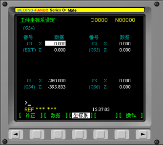
输入刀具补偿参数
置模式开关在EDIT或AUTO
按键进入参数设定页面，按“”
用PAGE和键选择
补偿号
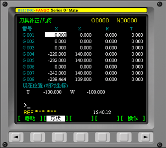
输入工件移参数
置模式开关在EDIT或AUTO
按键进入参数设定页面，按“工件移”
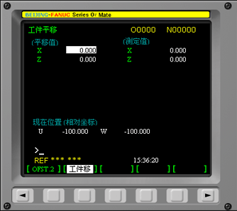
位置显示
按键切换到位置显示页面。
位置显示有三种方式，用PAGE和键或按键切换。
MDI手动数据输入
置模式开关在,按分程序段号“N10”，输入程序如G0X50；按“N10G0X50” 程序被输入，按循环启动键按钮。数控程序运行。
零件坐标系（绝对坐标系）位置： 显示刀位点在当前零件坐标系中的位置。
相对坐标系位置：显示操作者预先设定为零的相对位置。
综合显示：同时显示当时刀位点在以下坐标系中的位置
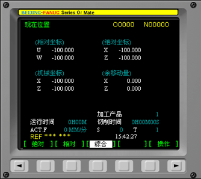